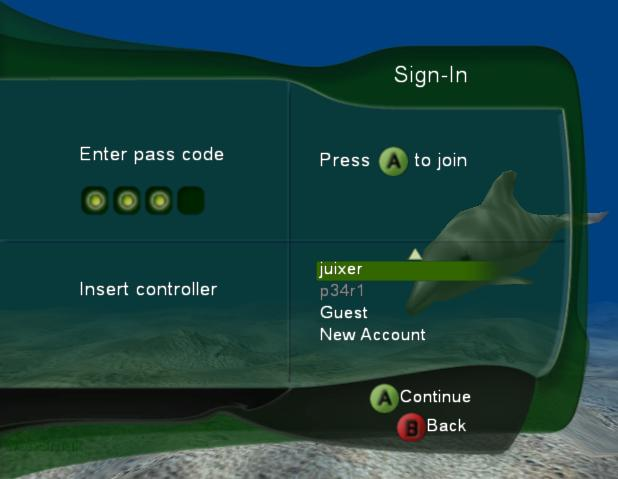

Illustration Logon Feature waiting for input.
The Xbox Drop-in UI provides an easy-to-use, skinnable, pluggable, customizable drop-in Xbox Live user interface. The Xbox Drop-in UI, which titles can use as an alternative to implementation using direct Xbox Live Library calls, meets all applicable Technical Certification Requirements (TCRs) and complies with the recommended UI guidelines. Xbox Drop-in UI enables rapid development of an Xbox Live user interface without hindering game innovation or disrupting the game's overall interface flow. Because Xbox Drop-in UI features meet the applicable TCRs, it can ease the title's burden of verifying TCRs and passing game certification.
The Xbox Drop-in UI consists of the following components:

Illustration The Xbox Drop-in UI Logon Feature in action.
Xbox Drop-in UI does:
Xbox Drop-in UI does not:
An Xbox Drop-in UI feature implements a set of related Xbox Live functionality. Features map closely to major Xbox Live areas such as Friends, Logon, and Matchmaking. Individual features are enabled with ILiveEngine::EnableFeature and invoked with ILiveEngine::StartFeature. Features are partitioned so that titles can choose to use Xbox Drop-in UI for some areas while still implementing other Xbox Live functionality directly.
Over time, additional features will be added to handle more Xbox Live functional areas (such as Statistics and Matchmaking).
Illustration Logon Feature waiting for input.
The Logon feature provides a drop-in UI solution that implements best practices (including applicable TCRs and recommended UI) for displaying a logon screen and logging players onto the Xbox Live service. The feature performs all logon functions, including selecting user accounts, entering passcodes if needed, and finally logging on to the service. The feature handles logon errors and displays appropriate error messages to the players. The feature exits with an exit code indicating whether logon was successful, an error occurred, or a user exited the logon screen.

Illustration Friends feature showing accepted and pending friends.
The Friends feature provides a drop-in UI solution that implements best practices (including applicable TCRs and recommended UI) for displaying an in-game Friends List. The title starts the Friends feature when a player selects "Friends" from either the start menu or main menu of the game. While the Friends feature is active, the title does not need to perform any additional friends work or checks (other than updating the engine in the render loop, as explained in the Render Loop topic).
While the Friends feature is not displayed (has not been started), the title can access methods provided in ILiveFriendsList in order to obtain Friends List data. Titles can use this friends data while displaying a Players List to indicate which players are friends. The ILiveFriendsList interface is obtained by calling ILiveEngine::GetFriendsForUser. While the Friends feature is active (being displayed), however, the title should not access ILiveFriendsList or any Xbox Live Friends functions.
The Friends feature requires that the Matchmaking service (XONLINE_MATCHMAKING_SERVICE) was requested when the Logon feature was started.
The Players feature provides a drop-in UI solution that implements best practices (including applicable TCRs and recommended UI) for displaying an in-game Players List. While the Players feature is active, the title does not need to perform any additional Players List work or checks (other than updating the engine in the render loop, as explained in the Render Loop topic).
ILiveEngine is the main interface to the Xbox Drop-in UI. Titles use ILiveEngine methods to perform tasks such as engine initialization, enabling and starting features, and rendering to the display surface. The engine is active and running even while no features are currently displayed. Most of the ILiveEngine methods are described in Adding Xbox Drop-in UI Support.
Titles must call ILiveEngine::NotificationSetState instead of XOnlineNotificationSetState to set the current online state information for users. A user's online state includes information such as whether the user is playing, has voice capability, or is in a joinable session. ILiveEngine::SetProperty modifies engine behavior by changing the value of global properties.
Call UIXCreateLiveEngine to obtain the ILiveEngine interface.
Plug-ins are the interface between the Xbox Drop-in UI engine and the actual tasks of UI rendering and sound. The engine accepts pluggable interfaces for performing UI rendering, font rendering, and audio tasks. The provided default plug-ins implement full functionality, but titles can implement their own plug-in interfaces in order to gain finer control of rendering and sound for the UI screens.
If a title is using the default plug-ins, it need not be concerned with plug-in details (other than for ITitleFontRenderer, which the title must implement). The title simply creates and registers the default plug-ins (see Initialization), and does not interact with the plug-ins from that point on.
The ITitleUIPlugin plug-in is responsible for UI objects. The engine itself does not perform any user interface rendering; it calls the ITitleUIPlugin interface to perform all UI rendering functionality. The engine manages the information required to build the UI, the actions initiated by the UI, and the UI flow, while relying on the UI plug-in for the UI look and feel. This enables the rendered UI to be (for example) 2D or 3D, to use any font engine, custom icons, custom input, and so on, as desired. The default UI plug-in implementation provides a simple 2D interface.
ITitleFontRenderer, implemented by the title, is responsible for rendering text to the display surface. An example implementation using the XFONT library is shown in uix_ov_using.htm.
The ITitleAudioPlugin plug-in provides basic audio support for actions within the UI. The default audio plug-in uses an XACT sound bank containing sounds associated with each UI action.